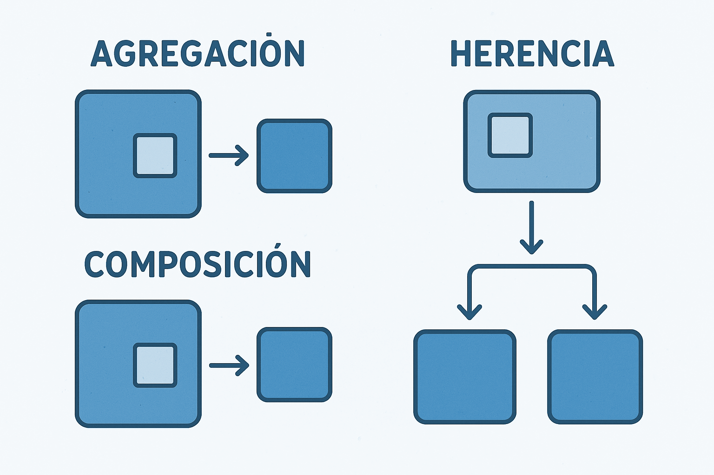

Descargar estos apunte en pdf o html
En la Programación Orientada a Objetos (POO), las clases no existen de forma aislada, sino que interactúan entre sí para construir sistemas complejos y funcionales. Estas interacciones definen los roles y responsabilidades que cada clase asume dentro del programa, de manera similar a como las personas desempeñan diferentes funciones en la sociedad. Un rol especifica el propósito o la tarea que una clase se compromete a realizar en su relación con otras. Por ejemplo, en un sistema de ventas, una clase Cliente podría tener el rol de "comprador", mientras que una clase Producto asume el rol de "artículo a la venta".

Establecer roles claros es fundamental para un buen diseño de software, ya que promueve una alta cohesión y un bajo acoplamiento entre las clases. Esto significa que cada clase se enfoca en una tarea específica (alta cohesión) y depende lo menos posible de los detalles internos de otras (bajo acoplamiento), lo que facilita la reutilización del código, el mantenimiento y la escalabilidad del sistema. Conceptos como la herencia, la composición y las interfaces son las herramientas que permiten a los programadores implementar formalmente estos roles, definiendo contratos y comportamientos esperados que dan forma a la arquitectura de la aplicación.
List<T> Antes de adentrarnos en los roles entre clases, es importante mencionar que las colecciones mejoradas son una característica clave en la POO. Aunque profundizaremos en su uso definición y comprensión más adelante, durante el tema vamos utilizar el tipo List<T> en lugar de los arrays tradicionales T[] pues me van a proporcionar ciertas ventajas y además, de esta forma, ya nos vamos a ir acostumbrando a su uso.
Básicamente su uso es igual a de los arrays, pero con la ventaja de que no es necesario especificar el tamaño al crearla, y se pueden añadir, insertar o eliminar elementos de forma dinámica y eficiente.
Por ejemplo supongamos una implementación simple de la clase Persona siguiente:
public class Persona
{
public string Nombre { get; }
public int Edad { get; private set; }
public Persona(string nombre, int edad)
{
Nombre = nombre;
Edad = edad;
}
public string ATexto() => $"{Nombre} {Edad} años";
}
Si tuviéramos que añadir personas a un array vacío redimensionando o insertar elementos en una posición concreta o borrar elementos de un array, el código sería algo así:
public static void Main()
{
Persona[] personas = [];
// Añadir personas al final del array redimensionando
personas = [.. personas, new("Ana", 30)];
personas = [.. personas, new("Luis", 25)];
personas = [.. personas, new("Pedro", 40)];
for (int i = 0; i < personas.Length; i++)
{
Console.WriteLine(personas[i].ATexto());
}
// Añadir una nueva persona en la posición 2 (María)
personas = [.. personas[..2], new("María", 35), .. personas[2..]];
foreach (Persona p in personas)
{
Console.WriteLine(p.ATexto());
}
// Eliminar la persona en la posición 1 (Luis)
personas = [.. personas[..1], .. personas[2..]];
foreach ((int i, Persona p) in personas.Index())
{
Console.WriteLine($"[{i}] = {p.ATexto()}");
}
}
Pero el código anterior es complejo de leer y bastante ineficiente. Si usamos la clase List<T> de la siguiente forma, el código es mucho más sencillo y eficiente:
public static void Main()
{
List<Persona> personas = new ();
// Añadir personas al final de la lista
personas.Add(new Persona("Ana", 30));
personas.Add(new Persona("Luis", 25));
personas.Add(new Persona("Pedro", 40));
for (int i = 0; i < personas.Count; i++)
{
Console.WriteLine(personas[i].ATexto());
}
// Añadir una nueva persona en la posición 2 (María)
personas.Insert(2, new Persona("María", 35));
foreach (Persona p in personas)
{
Console.WriteLine(p.ATexto());
}
// Eliminar la persona en la posición 1 (Luis)
personas.RemoveAt(1);
for (int i = 0; i < personas.Count; i++)
{
Console.WriteLine($"[{i}] = {personas[i].ATexto()}");
}
}
List<T> Si has analizado el código anterior, habrás visto que las operaciones con List<T> son mucho más sencillas, legibles y eficientes que con los arrays. Además y más importante, las operaciones de añadir, borrar o insertar sobre arrays crean un array nuevo cada vez y sobre una lista esto no sucede porque el objeto lista siempre es el mismo y lo único que hacemos es modificar su contenido o estado. Veamos estas operaciones con un poco más de detalle:
Inicializar la Lista, para poder usarla.
Es lo primero que debemos hacer es instanciar la lista para luego ir añadiendo elementos. Esto se hace definiendo una variable de tipo List<T> y usando el operador new para instanciarla como objeto de tipo referencia.
Supongamos una lista de cadenas, la inicialización se haría de la siguiente manera...
List<string> textos = new ();
// Puedo darles un tamaño inicial como a los arrays, aunque no es necesario.
List<string> textos = new (5000);
// Puedo definir unos datos iniciales como en los arrays.
List<string> textos = ["texto1", "texto2", "texto3"];
Añadir datos una vez tenemos la lista creada, podemos añadir datos de dos formas:
Usando el método de instáncia Add, añadiremos un elemento al final de ella.
textos.Add("cadena añadida")
Usando el método de instáncia Insert, añadiremos un elemento en la posición que indiquemos.
textos.Insert(1, "otra cadena")
Modificar un dato: Como en los arrays, si queremos cambiar directamente el valor de uno de los datos de la lista, basta con que accedamos a su índice o posición y modifiquemos o le asignemos otro valor.
textos[1] = "Hola"
Eliminar un dato de la lista, se puede hacer de varias formas pero de momento solo vamos a usar la eliminación a partir del índice.
Para ello usaremos el método de instáncia RemoveAt, elimina el elemento de la posición que indiquemos:
textos.RemoveAt(0);
Cuidado
Debemos tener en cuenta que estas operaciones cambiarán el tamaño de la lista y por tanto deberemos llevar cuidado si eliminamos elementos mientras la recorremos o si nos hemos guardado la posición de algún dato ya que cambiará tras la eliminación de un elemento anterior.
Recorrer los elementos de la lista a través de un bucle for o forech como vimos en el ejemplo anterior. Fíjate que La longitud de la lista ya no es la propiedad Lenght como en los arrays, sino la propiedad Count.
De momento esto es todo lo que necesitamos saber sobre las listas, ya que en el tema de colecciones veremos más a fondo su uso y funcionalidades.
La relación "Todo-Parte" es una de las formas más intuitivas de conectar objetos en la programación orientada a objetos. Para identificarla, nos hacemos la pregunta "¿Tiene un...?". Si la respuesta es afirmativa, probablemente estemos ante una relación de este tipo, también conocida como composición o agregación. Por ejemplo, si analizamos un coche, podemos preguntarnos: ¿Un Coche tiene un Motor? La respuesta es sí. Esto indica que la clase Coche (el todo) contendrá una instancia o referencia a un objeto de la clase Motor (la parte).
La cardinalidad define el número de instancias de una clase que se relacionan con las instancias de otra. En las relaciones Todo-Parte, especifica cuántas "partes" puede o debe tener un "todo", y a veces, a cuántos "todos" puede pertenecer una "parte". Esta regla numérica es fundamental para que el modelo de software sea preciso y coherente con la realidad que representa. Por ejemplo, la relación entre un CuerpoHumano y un Corazon es de uno a uno (1:1), ya que cada cuerpo tiene un único corazón.
La cardinalidad puede variar y es clave para definir las reglas del negocio. Un Coche tiene exactamente cuatro Ruedas (una relación de uno a cuatro, 1:4), mientras que un Pedido puede tener "uno o muchos" Productos (una relación de uno a muchos, 1..n). Definir esta cardinalidad es crucial, ya que impone restricciones en el sistema. Por ejemplo, el software no debería permitir crear un coche con tres ruedas o un pedido sin productos si las reglas no lo contemplan, garantizando así la integridad de los datos.
Es la relación todo-parte más común, donde almacenamos una referencia (Reference Type) al objeto 'original' en el objeto 'contenedor'.
La agregación indica independencia de los objetos, esto significa que si desaparece el contenedor, no desaparece el agregado.
En el ejemplo del diagrama diremos que: 'Un Banco tendrá de 0 a N Clientes'. Pero al tratarse de una agregación, al desaparecer un objeto banco, no desaparecerán con él sus clientes.
Representación UML
Error: plantuml.jar file not found: "" Please download plantuml.jar from https://plantuml.com/download. If you are using VSCode or coc.nvim, then please set the setting "markdown-preview-enhanced.plantumlJarPath" to the absolute path of plantuml.jar file. If you don't want to use plantuml.jar, then you can use the online plantuml server by setting the setting "markdown-preview-enhanced.plantumlServer" to the URL of the online plantuml server, for example: https://kroki.io/plantuml/svg/
Almacenaremos un Value Object ya sea como Value Type o como Reference Type, en el objeto 'contenedor'.
La composición indica dependencia de los objetos, esto significa que si desaparece el contenedor, desaparece el subobjeto.
En el ejemplo del diagrama diremos que: 'Un Banco tendrá de 1 a N Sucursales'. Pero al tratarse de una composición, al desaparecer un objeto banco, desaparecerán con él sus sucursales.
Representación UML
Error: plantuml.jar file not found: "" Please download plantuml.jar from https://plantuml.com/download. If you are using VSCode or coc.nvim, then please set the setting "markdown-preview-enhanced.plantumlJarPath" to the absolute path of plantuml.jar file. If you don't want to use plantuml.jar, then you can use the online plantuml server by setting the setting "markdown-preview-enhanced.plantumlServer" to the URL of the online plantuml server, for example: https://kroki.io/plantuml/svg/
Nota
Si el subobjeto fuese un Tipo Valor (Value Type) creado con struct o readonly record struct como por ejemplo: int, DateTime, DateOnly, TimeOnly, Guid, etc. Podremos obviar expresar la relación de composición, pues ya se sobreentiende que al ser un tipo valor, se almacena el valor directamente en el objeto contenedor y por tanto es un composición.
Vamos a crear una relación las clases de ejemplo que fuimos creando en la unidad 13 Escritor y Libro de tal manera que el Libro va a tener información del Escritor a través de una agregación.
Cumple con la máxima de que, si desaparece el libro no tiene porque desaparecer el escritor.
Puedes descargarte el código de ejemplo de la unidad 13 en los siguientes enlaces: Libro.cs, Escritor.cs
Una posible forma de expresarlo en UML es la siguiente:
Error: plantuml.jar file not found: "" Please download plantuml.jar from https://plantuml.com/download. If you are using VSCode or coc.nvim, then please set the setting "markdown-preview-enhanced.plantumlJarPath" to the absolute path of plantuml.jar file. If you don't want to use plantuml.jar, then you can use the online plantuml server by setting the setting "markdown-preview-enhanced.plantumlServer" to the URL of the online plantuml server, for example: https://kroki.io/plantuml/svg/
Aunque no se especifica en el UML, de la relación se debe deducir que en la clase Libro tendremos una propiedad nueva que podemos denominar Autor y que será de solo lectura.
Veamos los cambios que implicará esta relación en la implementación de nuestra clase Libro.
public class Libro
{
// ... código omitido por brevedad.
// Añadiremos la propiedad Autor de solo lectura
public Escritor Autor { get; }
// ... código omitido por brevedad.
// Recibimos la referencia al escritor en el constructor de libro.
public Libro(
string titulo,
int año,
int paginas,
Escritor autor)
{
// ... código omitido por brevedad.
// Nos quedamos con la referencia y en ningún caso deberemos hacer un copia de escritor.
Autor = autor;
}
// ... código omitido por brevedad.
// Acambiamos Atexto() para la información del escritor a la descripción del libro.
public string ATexto() => $"""
Libro
--------------------------
Título: {Titulo}
Año: {Año}
Páginas: {Paginas}
Páginas leídas: {PaginasLeidas}
Autor --------------------
{Autor.ATexto()}
""";
}
En cuanto a la clase Escritor la única modificación la deberíamos hacer en el método Escribe() que ahora debe pasar el escritor al constructor de Libro.
// ... código omitido por brevedad.
public Libro Escribe(string titulo)
{
Range r = 400..800;
Publicaciones++;
return new (
titulo: titulo,
año: DateTime.Now.Year,
paginas: new Random().Next(r.Start.Value, r.End.Value + 1),
autor: this);
}
Si implementamos y ejecutamos el siguiente código de test...
public static void Main()
{
Escritor e = new ("María", 1980);
Libro l1 = e.Escribe("Programación en C#");
Console.WriteLine(l1.ATexto());
Console.WriteLine();
Libro l2 = e.Escribe("Programación en Java");
Console.WriteLine(l2.ATexto());
}
Los dos objetos Libro l1 y l2 referenciarán al mismo objeto Escritor e. Es más, si te fijas en la salida, el escritor al ver la primera descripción en l1 solo ha publicado un libro y después de escribir el segundo libro la descripción de l2 mantiene la integridad referencial indicándonos que ha publicado 2.
Mostrará por consola:
Libro -------------------------- Título: Programación en C# Año: 2026 Páginas: 754 Páginas leídas: 0 Autor -------------------- Nombre: María Nacimiento: 1980 Publicaciones: 1 Libro -------------------------- Título: Programación en Java Año: 2026 Páginas: 443 Páginas leídas: 0 Autor -------------------- Nombre: María Nacimiento: 1980 Publicaciones: 2
Además, en el siguiente diagrama de los objetos creados podemos ver que l1 y l2 referencian al mismo objeto e de tipo Escritor a través de la propiedad Autor.
Puedes descargar el código de ejemplo propuesto para esta agregación del siguiente enlace: 1_agregacion_simple.cs.
Para este ejemplo de composición, vamos ha hacer algunos cambios añadiendo tres clases colaboradoras más y quitando alguna propiedad que ya no va a tener sentido. Dichas clases serán Value Objects que comentamos en la unidad 13. Su característica de inmutabilidad nos permite usarlas como subobjetos de forma implícita.
Isbn13 se encargará de asignar un identificador único o id a cada libro y por tanto convertirlo en una entidad (<<entity>>) y es una composición porque obviamente al desaparecer el libro, desaparece su Isbn. (Enlace a Isbn13.cs). Quitaremos de Libro el método Lee(..) y la propiedades PaginasLeidas y PorcentajeLeido ya que no tienen sentido al convertirse en una entidad única. El libro, ya no representará un ejemplar concreto de un libro que se pueda leer, sino un libro en sí mismo como entidad publicada.DateOnly definida en la BCL y que sustituiremos por la propiedad Año en la clase Libro. Será una composición por los mismos motivos que el Isbn. La nueva propiedad se llamará FechaPublicacion asociada a este tipo será.Escritor por lo que vamos ha cambiar la propiedad int Nacimiento por DateOnly FechaNacimiento y la convertiremos en una composición.Guid definida en la BCL y que añadiremos a la clase Escritor como propiedad Id para identificar de forma única a cada escritor. Será una composición por los mismos motivos que el Isbn y hará que el Escritor sea una entidad (<<entity>>).Error: plantuml.jar file not found: "" Please download plantuml.jar from https://plantuml.com/download. If you are using VSCode or coc.nvim, then please set the setting "markdown-preview-enhanced.plantumlJarPath" to the absolute path of plantuml.jar file. If you don't want to use plantuml.jar, then you can use the online plantuml server by setting the setting "markdown-preview-enhanced.plantumlServer" to the URL of the online plantuml server, for example: https://kroki.io/plantuml/svg/
Si te fijas el diagrama anterior, las relaciones tienen cardinalidad 1..1, hemos añadido el estereotipo <<entity>> a las clases Libro y Escritor. Así como el estereotipo <<valueObject>> a la clases Isbn13 y <<dataType>> a DateOnly y Guid.
Estas relaciones se transformarán en las siguientes propiedades definidas en las clases...
Error: plantuml.jar file not found: "" Please download plantuml.jar from https://plantuml.com/download. If you are using VSCode or coc.nvim, then please set the setting "markdown-preview-enhanced.plantumlJarPath" to the absolute path of plantuml.jar file. If you don't want to use plantuml.jar, then you can use the online plantuml server by setting the setting "markdown-preview-enhanced.plantumlServer" to the URL of the online plantuml server, for example: https://kroki.io/plantuml/svg/
Fíjate que hemos añadido el estereotipo {id} a Isbn y al Id del escritor. Este además de indicar que es un identificador único, lleva implícito que es un de solo lectura ({readonly}).
Empecemos con la implementación. Primero vamos a modificar la clase Libro para que tenga las nuevas propiedades y el constructor que recibe los nuevos parámetros:
Aviso
Recuerda borrar el método Lee(..) y las propiedades PaginasLeidas y PorcentajeLeido de la clase Libro, ya que no tienen sentido como hemos comentado..
public class Libro { // ... código omitido por brevedad. public Isbn13 Isbn { get; } public DateOnly FechaPublicacion { get; } // ... código omitido por brevedad. public Libro( Isbn13 isbn, string titulo, DateOnly fechaPublicacion, int paginas, Escritor autor) { Isbn = isbn; Titulo = titulo; FechaPublicacion = fechaPublicacion; Paginas = paginas; Autor = autor; } // ... código omitido por brevedad. public string ATexto() => $""" Libro -------------------------- ISBN: {Isbn.ATexto("-")} Título: {Titulo} Fecha Publicación: {FechaPublicacion:dd-MM-yyyy} Páginas: {Paginas} Autor -------------------- {Autor.Nombre} """; }
Al modificar el constructor de la clase Libro, deberemos modificar el método Escribe() de la clase Escritor para que cree un objeto Isbn13 y un objeto DateOnly y los pase al constructor de Libro. Además, tiene cierto sentido que el método Escribe() reciba el Isbn13 con el que se va a publicar el libro por parte de algún tipo de editorial o publicador.
Además, vamos a añadir las nuevas propiedades Id y FechaNacimiento a la clase Escritor y modificar el constructor que las inicializa y otros métodos donde se usen como la propiedad calculada Edad o el método ATexto().
public class Escritor { // ... código omitido por brevedad. public Guid Id { get; } public DateOnly FechaNacimiento { get; } public int Edad => DateTime.Now.Year - FechaNacimiento.Year; // ... código omitido por brevedad. public Escritor(string nombre, DateOnly fechaNacimiento) { Id = Guid.NewGuid(); Nombre = nombre; FechaNacimiento = fechaNacimiento; Publicaciones = 0; } public string ATexto() => $""" Id: {Id} Nombre: {Nombre} Nacimiento: {FechaNacimiento} Publicaciones: {Publicaciones} """; public Libro Escribe( string titulo, Isbn13 isbn) { Range r = 400..800; Publicaciones++; return new ( isbn: isbn, titulo: titulo, fechaPublicacion: DateOnly.FromDateTime(DateTime.Now), paginas: new Random().Next(r.Start.Value, r.End.Value + 1), autor: this); } }
Por último, vamos modificar el Main() para que introducir el nuevo objeto Isbn13 en el momento de crear el Libro y añadir FechaDeNacimiento al constructor de Escritor.
public static void Main()
{
Escritor e = new(
nombre: "María Pérez",
fechaNacimiento: new DateOnly(1985, 5, 15));
Libro l = e.Escribe(
titulo: "Programación en C#",
isbn: new Isbn13(
prefijo: 978,
grupoDeRegistro: 84,
titular: 935489,
publicacion: 1));
Console.WriteLine(l.ATexto());
}
Mostrará por consola:
Libro -------------------------- ISBN: 978-84-935489-1-9 Título: Programación en C# Fecha Publicación: 13-01-2026 Páginas: 555 Autor -------------------- María Pérez
Fíjate que al mostrar el libro l podemos su Isbn y la fecha de publicación como objetos compuestos y los datos del autor como objeto agregado.
Puedes descargar el código de ejemplo propuesto para esta composición del siguiente enlace: 2_composicion_simple_ejemplo.cs.
Vamos tratar de representar una vez más cómo quedarían los objetos creados en el Main() en la memoria para repasar una vez más los conceptos de value types y reference types, así como el Stack y el Heap.
En el proceso de creación de los objetos tendremos que:
En el Stack tendremos dos referencias:
e que referencia al objeto de tipo Escritor "María"l que referencia al objeto de tipo Libro "Programación en C#"En el Heap tendremos:
Escritor referenciado por e en el StackIsbn13 que aunque se ha creado en el main no se guarda ninguna referencia en el Stack pues se crea al hacer la llamada y por tanta estará referenciado únicamente a través de la propiedad Isbn dentro de Libro.Libro que contiene el objeto valor DateOnly que al ser un tipo valor lo hemos representando formando parte del propio objeto Libro y no es una referencia a otro objeto en el Heap. Esto significa que será destruido junto con el libro.En el proceso de destrucción de los objetos tendremos que:
l y e por lo que:
Libro ya no estará referenciado por nadie y será liberado en la siguiente pasada del GC.Escritor aún seguirá referenciado por la propiedad Autor del objeto Libro y no se liberará.Libro...
FechaPublicacion se liberará con él al ser un value type.Isbn13 y Escritor dejará de estar referenciados y en la 'siguiente' pasada del GC se liberarán.Vamos ha hacer una última modificación sobre 2_composicion_simple_ejemplo.cs para añadir agregación con cardinalidad 1..n y 0..n, es decir, que un Libro puede tener varios autores (Escritores) y un Escritor puede haber escrito ningún o varios Libros. Con esta relación un Escritor ya no escribe directamente un Libro, sino que lo hará a través de una Editorial que lo publica. Por tanto, vamos a eliminar el método Libro Escribe(..) de la clase Escritor y en su lugar crearemos el método void Publica(Libro l) como se aprecia en el diagrama. Además, la propiedad Publicaciones pasará a ser calculada a partir de la colección de libros que tenga el escritor.
La clase Libro ya no recibirá un único Escritor en su constructor, sino una colección de tipo List<Escritor> de escritores que comentamos a principio del tema.
Por último, aparece una nueva clase Editorial que se encargará de gestionar la publicación de los libros y que tendrá una colección de libros
Error: plantuml.jar file not found: "" Please download plantuml.jar from https://plantuml.com/download. If you are using VSCode or coc.nvim, then please set the setting "markdown-preview-enhanced.plantumlJarPath" to the absolute path of plantuml.jar file. If you don't want to use plantuml.jar, then you can use the online plantuml server by setting the setting "markdown-preview-enhanced.plantumlServer" to the URL of the online plantuml server, for example: https://kroki.io/plantuml/svg/
publicados y si te fijas en el diagrama es una entidad <<entity>> con un identificador que es la propiedad Cif de tipo string. Un método factoría Libro Publica(string titulo, int páginas, List<Escritor> autores) que se encargará de crear un libro y añadirlo a la colección de libros publicados. Además, se encargará de llamar al método Publica(Libro l) de cada uno de los escritores que hayan colaborado en la publicación del libro.
Importante
Lo más importante es tener en cuenta que cada relación de agregación múltiple, implicará una propiedad privada de tipo List<T> en la clase que hace de todo.
Veamos como quedará el código de las clases implicadas que puedes puedes descargar del siguiente enlace: 3_agregacion_multiple_ejemplo.cs.
public class Libro { public Isbn13 Isbn { get; } public string Titulo { get; } public DateOnly FechaPublicacion { get; } public int Paginas { get; } private List<Escritor> Autores { get; } public Libro( Isbn13 isbn, string titulo, DateOnly fechaPublicacion, int paginas, List<Escritor> autores) { Isbn = isbn; Titulo = titulo; FechaPublicacion = fechaPublicacion; Paginas = paginas; Autores = [.. autores]; // En este contexto me haré una copia de la lista de autores. } public string ATexto() { StringBuilder autoresTexto = new(); foreach (Escritor autor in Autores) autoresTexto.AppendLine($"\t- {autor.Nombre}"); return $""" Libro -------------------------- ISBN: {Isbn.ATexto("-")} Título: {Titulo} Fecha Publicación: {FechaPublicacion:dd-MM-yyyy} Páginas: {Paginas} Autores: {autoresTexto} """; } }
public class Escritor { public Guid Id { get; } public string Nombre { get; } public DateOnly FechaNacimiento { get; } public int Edad => DateTime.Now.Year - FechaNacimiento.Year; private List<Libro> LibrosPublicados { get; } public int Publicaciones => LibrosPublicados.Count; public Escritor(string nombre, DateOnly fechaNacimiento) { Id = Guid.NewGuid(); Nombre = nombre; FechaNacimiento = fechaNacimiento; LibrosPublicados = []; } public void Publica(Libro libro) { LibrosPublicados.Add(libro); } public string ATexto() { StringBuilder librosTexto = new(); foreach (Libro libro in LibrosPublicados) librosTexto.AppendLine($"\t- {libro.Titulo}"); return $""" Escritor -------------------------- ID: {Id} Nombre: {Nombre} Nacimiento: {FechaNacimiento} Publicaciones: {Publicaciones} Edad: {Edad} Libros: {librosTexto} """; } }
Es importante volver a recalcar que la propiedad LibrosPublicados es privada y no se puede acceder directamente desde fuera de la clase Escritor. Por tanto, la única forma de añadir un libro a la colección es a través del método Publica(Libro l). Esto garantiza un bajo acoplamiento y que por error alguien manipule la lista de libros publicados directamente.
public class Editorial { public string Cif { get; } public string Nombre { get; } public string Direccion { get; } private List<Libro> LibrosPublicados { get; } public static bool ValidarCif(string cif) => !String.IsNullOrWhiteSpace(cif) && Regex.IsMatch(cif, @"^[A-Z]\d{8}$"); public Editorial(string cif, string nombre, string direccion) { Debug.Assert( condition: ValidarCif(cif), message: $"El CIF {cif} no es válido."); Cif = cif; Nombre = nombre; Direccion = direccion; LibrosPublicados = []; } public string ATexto() { StringBuilder librosTexto = new(); foreach (Libro libro in LibrosPublicados) librosTexto.AppendLine($"\t- {libro.Titulo}"); return $""" Editorial -------------------------- CIF: {Cif} Nombre: {Nombre} Dirección: {Direccion} Libros Publicados: {librosTexto} """; }
public Libro Publica(
string titulo,s
int paginas,
List<Escritor> autores)
{
Libro l = new(
// Creamos un nuevo objeto Isbn13 para el libro.
isbn: new(
prefijo: 978,
grupoDeRegistro: 84,
titular: 935489,
publicacion: LibrosPublicados.Count + 1),
titulo: titulo,
fechaPublicacion: DateOnly.FromDateTime(DateTime.Now),
paginas: paginas,
// Pasamos la lista de autores al libro.
autores: autores);
// Añadimos el libro a la colección de libros publicados.
LibrosPublicados.Add(l);
// Llamamos al método Publica de cada autor para que se añada a su colección de libros publicados.
foreach (Escritor autor in autores) autor.Publica(l);
return l;
}
}
Aviso
Es muy importante dar una dimensión inicial a la colección de libros publicados de la Editorial y el Escritor en los constructores. Para ellos hemos usado LibrosPublicados = []. Pues la lista es un objeto que se quedará a null si no lo inicializamos.
Otra posibilidad menos recomendable sería inicializar la lista al definir la propiedad ...
private List<Libro> LibrosPublicados { get; } = [];
Aunque se puede dar un valor inicial a las propiedades al definirlas, solo es recomendable hacerlos si tenemos más de un constructor, o hay un únicos constructor principal que definimos al definir el tipo como en los como hicimos con los record class simplificados.
Veamos ahora la ejecución e implementación de un código de test en el Main() que creará una editorial, varios escritores y publicará dos libros con diferentes autores.
public static void Main()
{
Editorial editorial = new(
cif: "A12345678",
nombre: "Editorial Balmis S.L.",
direccion: "Calle La Cerámica, 12");
Escritor e1 = new(
nombre: "María Pérez",
fechaNacimiento: new(1980, 5, 15));
Escritor e2 = new(
nombre: "Juan López",
fechaNacimiento: new(1975, 3, 20));
Escritor e3 = new(
nombre: "Ana García",
fechaNacimiento: new(1990, 8, 30));
Libro l1 = editorial.Publica(
titulo: "Aprendiendo C#",
paginas: 300,
autores: [e1, e2]);
Console.WriteLine(l1.ATexto());
Console.WriteLine(e1.ATexto());
Console.WriteLine(e2.ATexto());
Console.WriteLine(e3.ATexto());
Console.WriteLine(editorial.ATexto());
Libro l2 = editorial.Publica(
titulo: "Roles entre clases",
paginas: 200,
autores: [e2, e3]);
Console.WriteLine(l2.ATexto());
Console.WriteLine(e1.ATexto());
Console.WriteLine(e2.ATexto());
Console.WriteLine(e3.ATexto());
Console.WriteLine(editorial.ATexto());
}
Salida tras pubicar e1 y e2 en el primer libro l1:
Libro
--------------------------
ISBN: 978-84-935489-1-9
Título: Aprendiendo C#
Fecha Publicación: 15-08-2025
Páginas: 300
Autores:
- María Pérez
- Juan López
Escritor
--------------------------
ID: c120b322-df35-4a02-ae42-9243778ed65d
Nombre: María Pérez
Nacimiento: 15/05/1980
Publicaciones: 1
Edad: 45
Libros:
- Aprendiendo C#
Escritor
--------------------------
ID: fd5e5689-f3eb-4833-abb4-a05c91646be2
Nombre: Juan López
Nacimiento: 20/03/1975
Publicaciones: 1
Edad: 50
Libros:
- Aprendiendo C#
Escritor
--------------------------
ID: 87d415f7-611a-46a2-84ff-85fcdfa8cf5d
Nombre: Ana García
Nacimiento: 30/08/1990
Publicaciones: 0
Edad: 35
Libros:
Editorial
--------------------------
CIF: A12345678
Nombre: Editorial Balmis S.L.
Dirección: Calle La Cerámica, 12
Libros Publicados:
- Aprendiendo C#
Salida tras pubicar e2 y e3 en el segundo libro l2:
Libro
--------------------------
ISBN: 978-84-935489-2-6
Título: Roles entre clases
Fecha Publicación: 15-08-2025
Páginas: 200
Autores:
- Juan López
- Ana García
Escritor
--------------------------
ID: c120b322-df35-4a02-ae42-9243778ed65d
Nombre: María Pérez
Nacimiento: 15/05/1980
Publicaciones: 1
Edad: 45
Libros:
- Aprendiendo C#
Escritor
--------------------------
ID: fd5e5689-f3eb-4833-abb4-a05c91646be2
Nombre: Juan López
Nacimiento: 20/03/1975
Publicaciones: 2
Edad: 50
Libros:
- Aprendiendo C#
- Roles entre clases
Escritor
--------------------------
ID: 87d415f7-611a-46a2-84ff-85fcdfa8cf5d
Nombre: Ana García
Nacimiento: 30/08/1990
Publicaciones: 1
Edad: 35
Libros:
- Roles entre clases
Editorial
--------------------------
CIF: A12345678
Nombre: Editorial Balmis S.L.
Dirección: Calle La Cerámica, 12
Libros Publicados:
- Aprendiendo C#
- Roles entre clases